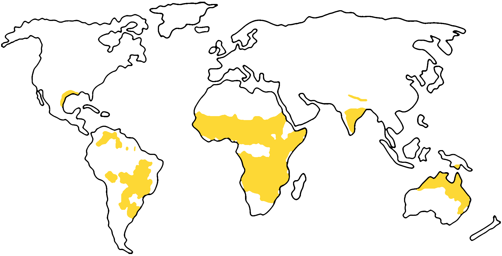

Location
The savanna biome stretches across various continents within the tropical and subtropical latitudes, typically between 15° and 30° North and South of the equator. This biome spans vast areas, covering significant portions of Africa, especially east and southern Africa, northern Australia, central Brazil, and parts of South America such as the Llanos of Venezuela and Colombia. It is not confined to a narrow band of latitude but is widespread, varying in altitude and local climatic conditions, resulting in diverse expressions of the savanna environment from the Serengeti in East Africa to the open grasslands of the Australian Outback.
Climate Overview
The savanna biome, known for its tropical setting, exhibits a diverse range of climatic conditions due to its expansive geographical spread. This diversity renders precise climate data challenging, resulting in general climate ranges being more informative.
Temperature
Range: The average monthly temperature in savannas oscillates between 10-20°C during the dry season and 20-30°C in the wet season.
Day-Night Fluctuation: A hallmark of the savanna climate is the significant difference between day and night temperatures.
Precipitation
Annual Rainfall: Savannas typically receive between 800 and 1,600 millimeters of rain per year, decreasing as one moves farther from the equator.
Seasonal Distribution: Rain predominantly falls in the summer months, though the exact timing varies between hemispheres.
Seasonal Dynamics
Dry Season: Characterized by less than 4 inches of rain per month, lasting around five months or more.
Wet Season: Generally commences in May in the northern hemisphere and in October in the southern hemisphere, with variable start times and durations.
Climate Graph: Savanna (Oklahoma)
* Graph is not a general representation of climate across all savannas but rather an illustrational case of data from Climate-Data.org
Flora and Fauna

Red Grass
(Themeda triandra)
This grass grows rapidly in the wet season and survives dry periods as dormant buds near the soil surface. It's adapted to quickly utilize short periods of moisture.

Baobab Tree
(Genus Adansonia)
These trees have a wide, water-storing trunk and can live for thousands of years. Their adaptation includes storing large amounts of water to survive the dry season.

Acacia Tree
(Genus Acacia)
These trees are adapted to the savanna with deep roots for water access and small, thick leaves to reduce water loss. Their symbiosis with ants provides defense against herbivores.

Candlestick Tree
(Euphorbia ingens)
They feature a thick, water-storing stem and small leaves to minimize water loss, making them well-suited to the dry savanna climate.

African Elephant
(Loxodonta africana)
Adapted with large ears for body temperature regulation and a long trunk for accessing water and food, crucial for survival in the vast savanna.
African Buffalo
(Syncerus caffer)
Adapted with large, curved horns for defense against predators and strong herd instincts for protection. Their digestive system efficiently processes grass, allowing them to thrive on the savanna's primary vegetation.
Cheetah
(Acinonyx jubatus)
Adapted for speed, with a streamlined body and long limbs, allowing them to catch fast-moving prey in the open savanna. Their spotted coat provides camouflage in the grassy environment.
Giraffe
(Giraffa camelopardalis)
Their long necks enable them to feed on leaves high in trees, beyond the reach of other herbivores, which is a significant advantage in the savanna where food sources can be spread out.

Rock Monitor
(Varanus albigularis)
These large lizards are adapted with strong, sharp claws for climbing and digging. They are versatile predators and scavengers, able to consume a wide range of prey, an important trait in the fluctuating food availability of the savanna.
Current Threats
Deforestation and Land Conversion
In regions like the Brazilian Cerrado savanna, deforestation and land conversion for agriculture have led to significant ecological changes. This activity not only disrupts the natural vegetation but also affects water resources, as the Cerrado is a major source of water for many Brazilian river basins. The loss of native vegetation has been linked to drier conditions and reduced water availability, which in turn impacts agriculture and energy production, especially considering Brazil's heavy reliance on hydropower.
Overgrazing and Unsustainable Land Use
Overgrazing by livestock, particularly in the drier parts of the African savanna, has led to severe degradation of vegetation. This overuse of the land can result in desert-like conditions, making it difficult for native plants and animals to survive. Such practices threaten the delicate balance of these ecosystems.
Invasive Species
The introduction of invasive species, such as certain grasses and plants, can significantly alter the savanna's ecosystem. These species can outcompete native flora, change fire regimes, and disrupt the habitat for native wildlife. In some cases, invasive species can also act as vectors for diseases that affect native species.
Impact of Climate Change
Climate change is exacerbating many of the existing threats to savannas, such as altering rainfall patterns, increasing the frequency of droughts, and raising temperatures. These changes can have a profound impact on the savanna biome, affecting everything from plant growth to animal migration patterns.
Loss of Large Herbivores and Biodiversity Decline
The decline in populations of large herbivores like giraffes and elephants, mainly due to poaching and habitat loss, has an unexpected impact on savanna ecosystems. The absence of these herbivores can lead to the unchecked growth of certain plants like lianas, which can smother trees and alter the composition of plant communities.
Urbanization
Urbanization leads to habitat fragmentation and land conversion, which disrupts the natural flow of water and the balance of resources within the ecosystem. The construction associated with urban development often changes the landscape in ways that are detrimental to the natural savanna environment.
Temperature Change: Savanna (Kenya)
* Graph is not a general representation of temperature change across all savannas but rather an illustrational case of data obtained from International Monetary Fund
Conservation Efforts

Their work in Brazil's Cerrado focuses on landscape conservation planning and promoting sustainable agricultural practices that integrate biodiversity conservation. The Cerrado is a critical savanna region with rich biodiversity, and The Nature Conservancy's efforts are crucial in mitigating the impacts of large-scale agriculture and habitat loss.

This organization focuses on community-based conservation efforts in savanna regions. They address key challenges such as habitat loss, climate change, illegal wildlife trade, and human-wildlife conflicts. Their comprehensive approach includes leveraging diverse expertise and community partnerships to develop effective solutions for savanna conservation.
.jpg)
AWF implements on-the-ground safeguards to protect endangered species in Africa's savannas. Their work includes training rangers, deploying sniffer dogs, and empowering local communities through conservation-friendly development. They also focus on mitigating human-wildlife conflicts and strengthening prosecution of wildlife crimes, making a significant impact on savanna preservation.

They conduct extensive biodiversity monitoring projects in savanna ecosystems, focusing on long-term changes in savanna structure and biodiversity. Their projects include surveys of birds, mammals, and vegetation, which are essential in understanding and combating savanna loss and degradation.